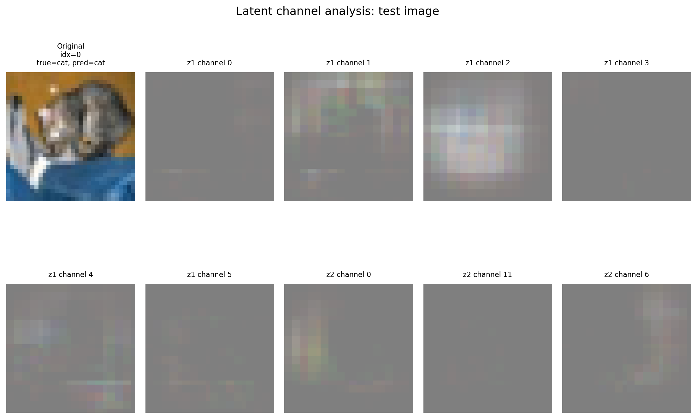

CIFAR-10 representation & reconstruction
This is a coursework-derived PyTorch implementation I wrote for a CIFAR-10 project. It keeps the model, training logic, and generated outputs visible while leaving out the class brief, dataset copy, and report.
What I built
- A CNN classifier for CIFAR-10 images.
- A deconvolutional decoder branch that reconstructs the input from the encoded representation.
- A joint objective that balances label prediction and reconstruction.
- Latent-channel checks that reconstruct an image after keeping one channel and zeroing the rest.
Outputs from the run

The top row is the original input. The bottom row is the reconstruction produced by the decoder branch. This is a learning implementation, so the visual is included as an honest inspection artifact rather than a benchmark claim.

The latent-channel panel makes the representation tangible: each panel keeps one encoder channel and reconstructs from that restricted signal.
Model math
z1 = pool(ReLU(conv1(x))) ; z2 = pool(ReLU(conv2(z1)))L_total = CrossEntropy(logits, y) + lambda_rec * MSE(reconstruction, x)The classifier reads z2 through fully connected layers. The decoder maps z2 back toward the original 32 x 32 image.
Code extract
class DeconvCNN(nn.Module):
def __init__(self):
super().__init__()
self.conv1 = nn.Conv2d(3, 6, 5)
self.pool = nn.MaxPool2d(2, 2)
self.conv2 = nn.Conv2d(6, 16, 5)
self.fc1 = nn.Linear(16 * 5 * 5, 120)
self.fc2 = nn.Linear(120, 84)
self.fc3 = nn.Linear(84, 10)
self.deconv1 = nn.ConvTranspose2d(16, 6, kernel_size=5)
self.deconv2 = nn.ConvTranspose2d(6, 3, kernel_size=5)
def encode(self, x):
z1 = self.pool(F.relu(self.conv1(x)))
z2 = self.pool(F.relu(self.conv2(z1)))
return z1, z2
def decode_from_z2(self, z2):
r = F.relu(self.deconv1(z2))
r = F.interpolate(r, size=(14, 14), mode="nearest")
r = F.relu(self.deconv2(r))
r = F.interpolate(r, size=(32, 32), mode="nearest")
return torch.tanh(r)The linked implementation is a self-contained extract of this model and its joint loss calculation.
Study corpus boundary
I also built an AI-assisted private study corpus for formulas, code examples, and concept checks. I do not publish the raw corpus because it mixes my notes with course and assessment materials. This public page shows my own implementation extract and generated visual outputs instead.